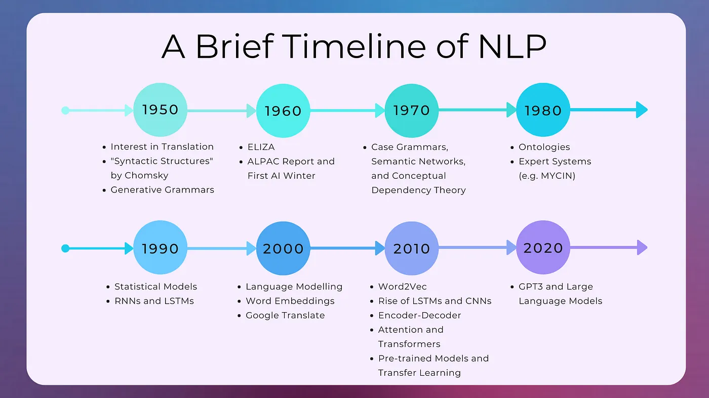
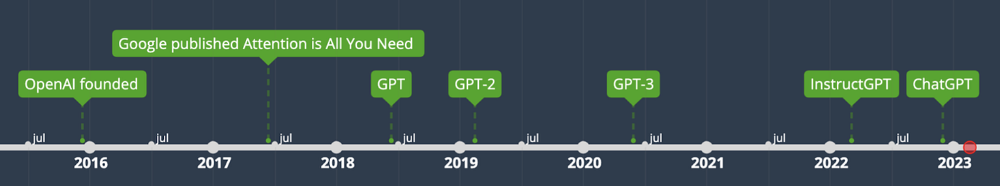
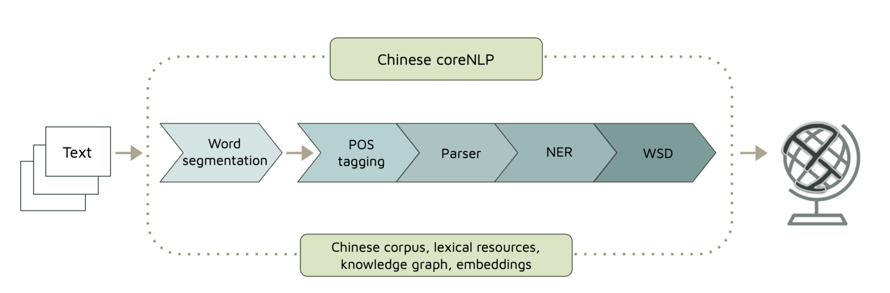
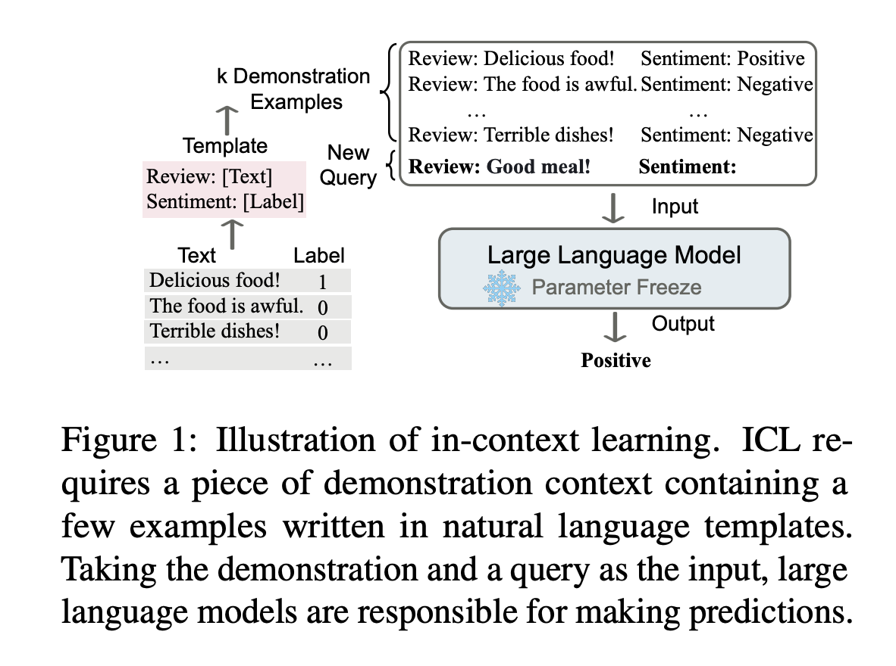
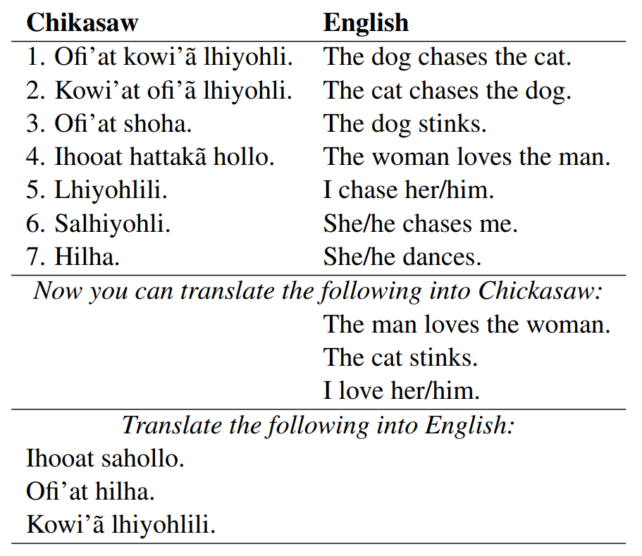
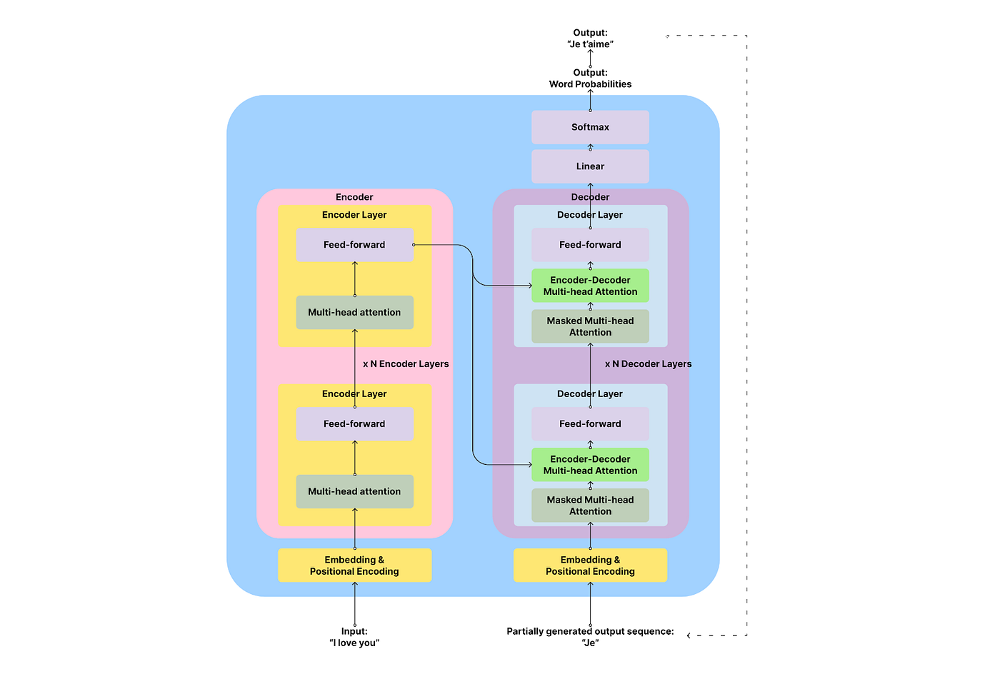
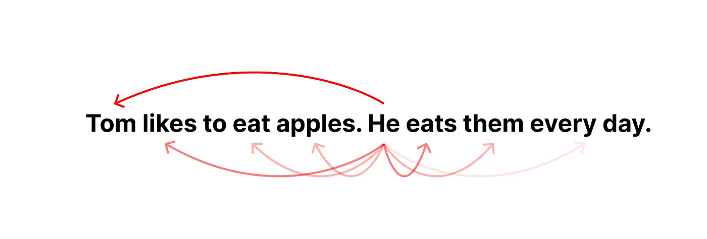
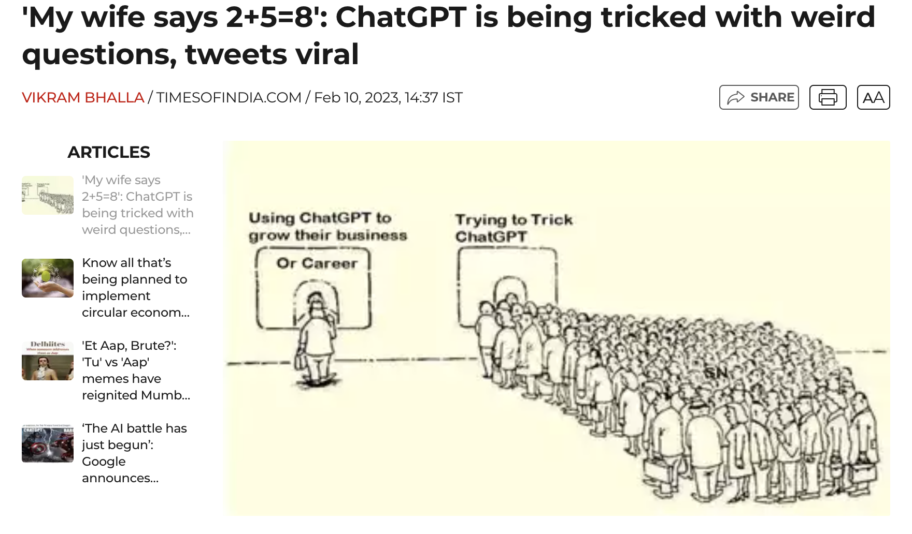
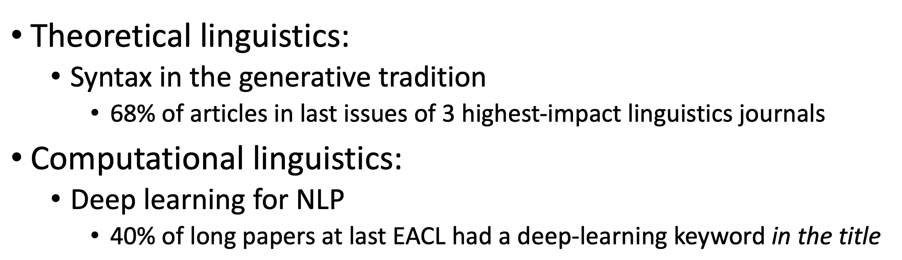
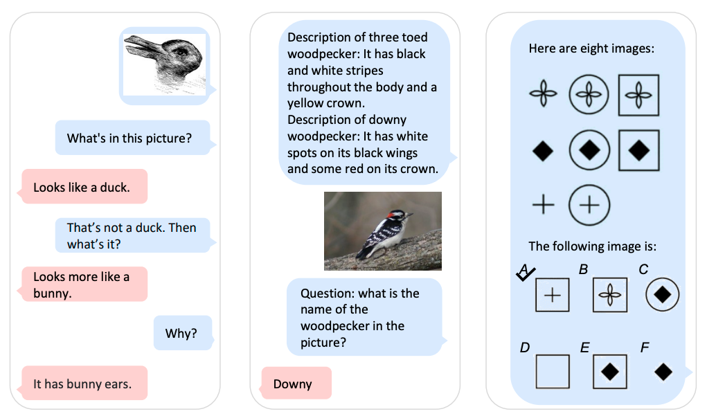

Week 2 Introduction
計算語言學入門
實務應用上會使用 SOTA 的工具。科學探索上要學習背後的理論歷史。
上週重點
自然語言處理和計算語言學的異同
但兩者的基礎類似 (機器學習、程式能力、演算法)
- 前者目前更側重語言模型的工程訓練
- 後者偏向邏輯推理與模組解析的語言理論研究
本週課程
NLP 簡史
語言理論與深度學習
入門實習
Timeline of NLP

Timeline NLP during the Deep Learning Era

- 在大數據大演算力的時代，auto-regressive LLMs (以
chatGPT(Brown et al. 2020) 爲代表) 改變了當前 NLP 生態的發展方向。
從這樣
NLP Process

變到這樣
NLP Process with a Language Model

{kind=link}
到晚近的 in-context learning (ICL, (Dong et al. 2022))
Learning from a few examples in context: 將 \(X\) 以及可能支持其預測 \(Y\) 的一些 context（可能是其他標記數據，背景知識，相關文檔等）一起輸入模型中，實現對 \(Y\) 的預測。
當下學習，不重新調參數。Different from supervised learning requiring a training stage that uses backward gradients to update model parameters, ICL does not conduct parameter updates and directly performs predictions on the pretrained language models.
Learn from analogy

\(A:B=C:?\)
- 會用自然語言寫
prompting templates、排序與挑選脈絡，變成一種解析技能。(Zhou et al. 2022)
一個語言學相關的有趣的延伸研究
邏輯推理是機器可學習的嗎？
a chain of thought (i.e., a series of intermediate reasoning steps) significantly improves the ability of large language models to perform complex reasoning.(Wei et al. 2022)
看看解語言謎題的結果 Translation Puzzles are In‑context Learning Tasks

先做基本的理解
預訓練大型語言模型 (Pre-trained Large Language Models)
語言模型從大量語料中學習語詞的機率分佈 (e.g., how likely a word or sequence can occur in the context).
Transformer-based language models。GPT-3 和 BERT 是其中具代表性的。
目前火紅的
chatGPT(Brown et al. 2020) (GPT-3 variants) 還利用人工反饋之強化學習微調 pre-trained on a huge corpus of web and book data and fine-tuned with human conversation examples through supervised learning and reinforcement learning from human feedback (RLHF).
Transformer 架構

- 是一種 encoder-decoder 神經網路類型，
Transformer-based Language Models
Transformer使用的注意力計算機制 (attention)，可以用來很好的處理序列數據 (e.g., 文本、語音、音樂)。注意力機制讓模型更去注意到序列元素之間的相關性。(e.g., He-Tom, apples-them) 
問題與討論
語言表達能力流暢 (儘管說的是真是假不確定)
貌似可以進行討論 (但是背後推理機制不透明) making probabilistic predictions in the generation process based on the corpus it has been trained on, which can lead to false claims about facts. Typical hedging behavior of ChatGPT will certainly increase the safety of the system.
不開源；非商業組織如大學，通常缺乏跟上語言模型快速發展所需的計算和財務資源。
以一個討論的場景爲例

課堂練習
與語言學的工作爲何漸行漸遠？
DNNs’ input data and architectures are not based on the symbolic representations familiar with linguistics, such as a parse trees or logical formulas. Instead, DNNs learn to encode words and sentences as vectors (sequences of real-numbers)…
preLLMs 學到了什麼？
學習到的不僅僅是鄰近字串機率，還有一些結構性的知識。 以許多語言的
long-distance number agreement為例。(Baroni 2021):p8如果先瞭解語言怎麼被我們學習到的 usage-based theory of language acquisition
- 結構性的東西，在一定的數據學習之後，會 emerged。不需要預先規劃與給定。
- 以 Papadimitriou and Jurafsky EMNLP 2020 爲例。
這就是爲何形式語言學與認知功能語言學的震驚程度不同 😆
語言學與機器學習的關係 (IMO)
規則學習 | 形式語言學 (formal syntax)
特徵學習 | 統計語言學 (statistical linguistics)
深度學習 | 認知與功能語言學 (cognitive/functional linguistics)
模型與語言理論之間的關係曖昧
- 背後有不同的哲學思潮，我們日後慢慢帶入。
理論語言學 | Theorectical Linguistics
(mostly known as Formal Syntax, or Generative Grammar)1

生成語法預設語言是個由有限遞迴規則組成的形式系統， 可以用來生成所有可能的合法句子。
大部分所謂的語言學理論，都是在生成語法的架構之下，主題包括：
- Learnability
- Generalization given insufficient data
- Centrality of syntactic structure
- . .
認知功能語言學 | Cognitive/Functional Linguistics
晚近才引入 NLP 的解釋
Language as a complex system
這些都蠻進階的，但我們慢慢從幾個重要的語言面向開始。
- 詞彙
- 句法
- 語意
- 語音與多模態
探究這些現象的語言學理論背景是什麼？又怎麼連接到 NLP 的工程實踐？
我認爲 (accord with LeCun, Carmack II)
目前的 LLM (Generative AI) 不太是 GAI (General AI) 的實踐方向，但是可以當作一個 IA 謹慎使用。
目前來說 (2023 上半年)，讓 LLM 發展更好一點，各司其職是個方法 😁
toolTransformer； 事實與邏輯的學習 perplexity.ai
但發展速度真的很快
multimodal LLM

分出兩種 NLP
[1]（計算語言學傳統）利用計算模型與工具， 以人懂的方式 （符碼運算）解析與瞭解語言 (及其他模態)。
[2]（post-LLM NLP 導向）以電腦會就好（張量運算）的方式，開發與調整模型的 (驚人的) 落地應用。
[1] 提供模型挑戰與複雜性 (e.g., 辯論、認錯、同理、意識, …)； [2] 反饋給（語言）理論發展範式的合理性，並且改變社會發展。
回到我們課程設計上
- [Lecture] 講解「與 NLP 相關的語言學理論」
linguistically-oriented DNN analysis (cf. BlackBox NLP 系列研討會; Computation in Linguistics 協會)
(ML 課程搭配)
- [Lab] 透過實作練習與工具使用
- 語言模組解析 via
spacy - 語言模型應用 via
Hugging Face (transformers)
- 語言模組解析 via
程式環境與工具準備
- 語料處理的基本功
bash(shell script)python(data processing)git(version control)jupyter(notebook)conda(virtual environment)
- 語料庫與程式工具
NLTK,spaCy, andflairckip-core,hanlp, andjiebaHugging FaceKeras,PyTorchandTensorFlowGensim,fastTextscikit-learn, etc.
- 語料分析實務 這本線上教材還沒完成，但是可以先看看。希望這學期前會完成讓大家可以參考。
References
======= ::: {style=“font-size: 0.875em;”} Back to course schedule ⏎ :::